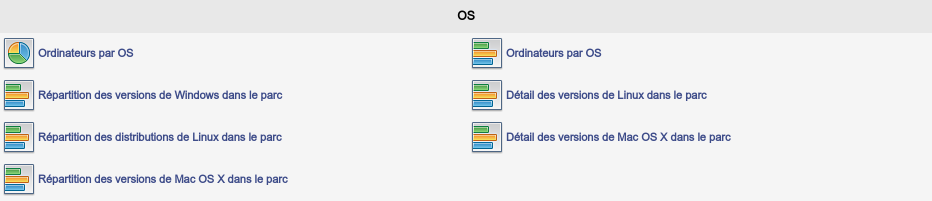
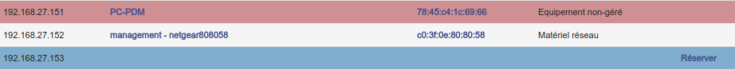
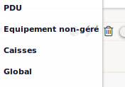
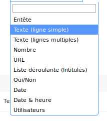

Plugins supplémentaires
Afin de faire de la supervision, c’est à dire la visualisation graphique des éléments de l’inventaire ou encore la gestion des rapports de bugs, il peut être utile de rajouter des plugins à GLPI. Il est à noter que les plugins sont liés aux versions de GLPI. Il est important de faire attention aux dates de release des plugins.
More Reporting
Le plugin More reporting, téléchargeable à cette adresse, permet la visualisation de graphiques résumant, par exemple, les ordinateurs par OS ou les versions des agents utilisés. Après activation, il sera disponible dans l’onglet Outils > Plus de rapports.

IP Report
Le plugin IPReport, disponible à cette adresse, permet quant à lui de visualiser les adresses IP libres, les IP attribuées ainsi que les éventuels doublons. Il est disponible sous l’onglet Outils > Adressage IP.

Network Architecture
La représentation du matériel réseau peut être consultée à l’ajout du plugin Network Architecture disponible ici. Il est possible de visualiser uniquement l’architecture d’un groupe, comme par exemple celle d’un site distant.
Generic Objects Management
Des catégories spécifiques au secteur d'activité peuvent être ajoutées à l'inventaire de parc afin de détailler le conditionnement des équipements. Le plugin Generic Objects Management permet d'ajouter de nouveaux intitulés. Leurs créations sera ensuite possible sous Configuration > Gestion d'objets.

Fields
Des informations peuvent être ajoutées aux différentes catégories d'équipement. Pour cela, installer le plugin Fields et ajouter différents champs pouvant être de type texte, date ou encore une liste déroulante etc.
